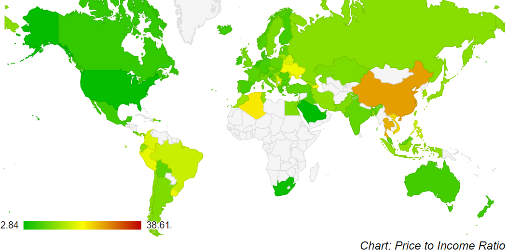
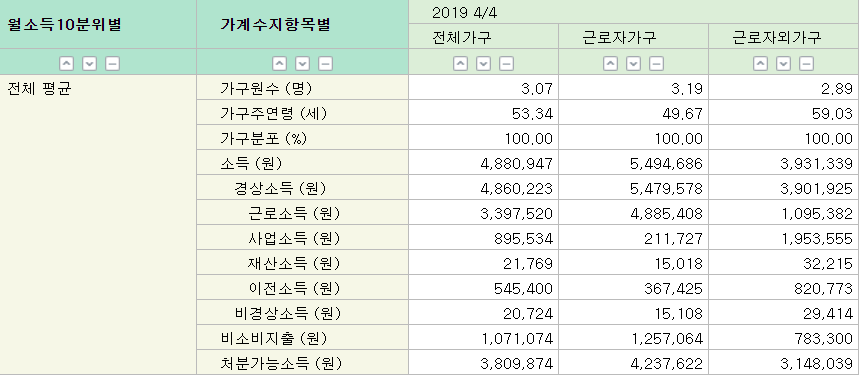
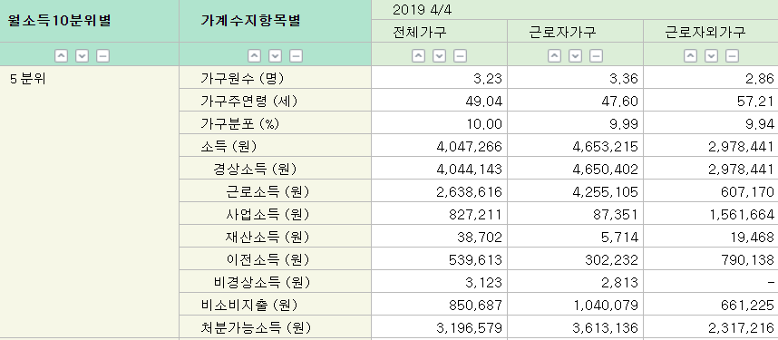
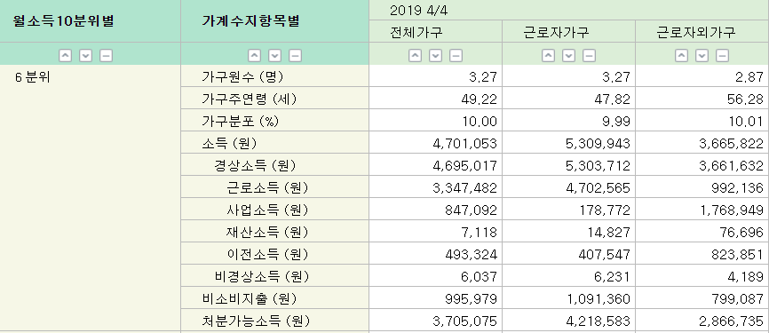
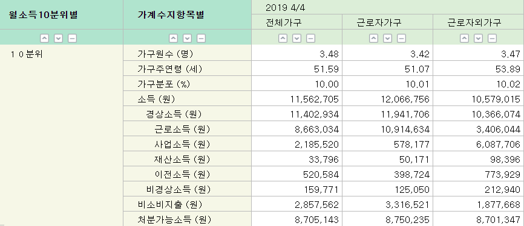
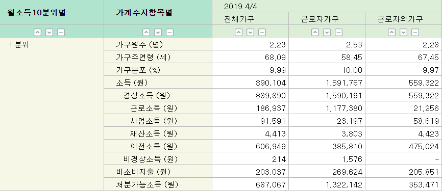
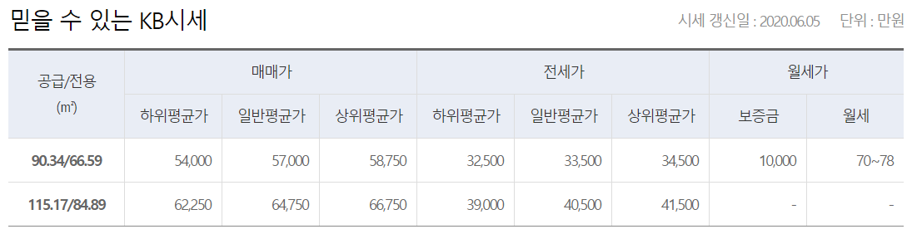
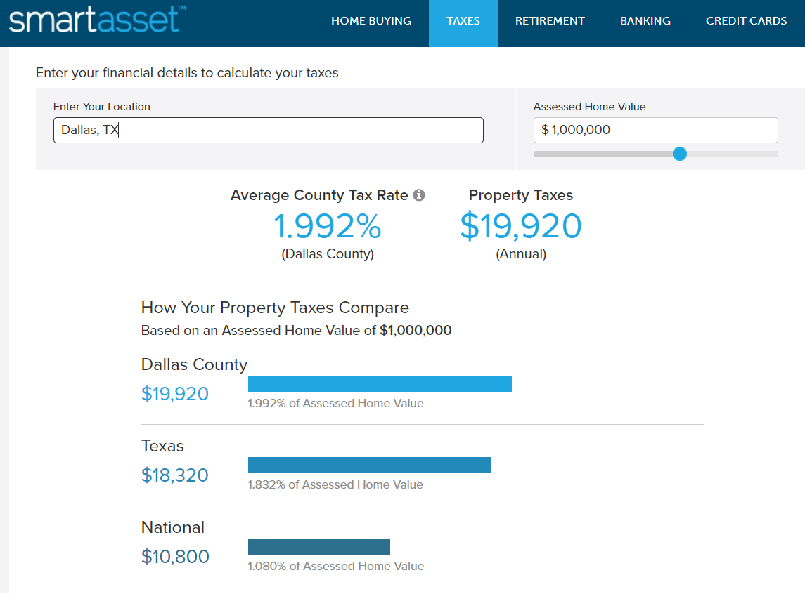
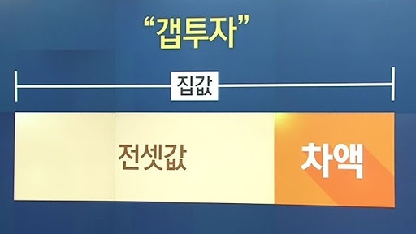

새로운 신분제 - 집주인이 현대의 귀족인걸까?
게시: 2020-06-18T06:30:12+09:00
앤 헤서웨이와 메릴 스트립이 주연한 2006년 영화 '악마는 프라다를 입는다'에서, 패션 잡지사 비서로 취직한 앤 헤서웨이가 친구들과 만나서 수다를 떨다가 건배를 할 때 아주 인상적인 건배사를 합니다. 기억들 나시나요? 바로 "To jobs that pay the rent" (월세를 내줄 일자리를 위하여) 였습니다. 에드 쉬란(Ed Sheeran)의 출세곡은 마약에 중독된 매춘 여성에 대한 노래인 'A team'인데, 그 가사 중에도 'Struggling to pay rent' 라는 부분이 있지요. 노래 속의 여성은 매춘으로 벌어들인 돈으로 명품 가방은 커녕 월세를 내기 위해 아둥바둥 한다는 이야기입니다.
("To jobs that pay the rent")
이렇게 서구의 영화나 소설을 보면 저렇게 집세를 내는 것이 서민들에게 정말 힘든 과제이자 영원한 고난으로 표현되는 경우가 많더라고요. 가령 벤 에플렉 주연의 영화 'Company Men'에서는 대기업에서 잘 나가던 젊은 이사 벤 에플렉이 금융위기 때 실직을 하자 곧 매월 내야 하는 모기지(주택담보대출) 원리금 상환을 못하게 되어 결국 집까지 잃고 처자식과 함께 고향의 부모님 집으로 가서 얹혀 살게 되지요. 이런 주택난에 대해서는 예수님도 한마디 하셨지요. (꼭 당시 예루살렘의 월세난을 탓하신 것 아닌 것 같긴 한데...)
(마태복음 8:20) 예수께서 이르시되 여우도 굴이 있고 공중의 새도 거처가 있으되 인자(the Son of Man)는 머리 둘 곳이 없다 하시더라
정말 짐승들과는 달리, 사회적 동물인 인간은 존재하기 위해서는 반드시 사람 사는 동네에 자신의 공간을 가져야 하고, 그 공간에 대해 돈을 내야 합니다. 사람의 존재 자체만으로 돈을 내야 하는 점에 있어서 집세는 국가가 걷는 세금과 다를 바가 없습니다. 집세에서 벗어나는 길은 인간으로서의 삶을 포기하고 산으로 들어가든지 (그럴 경우 사실 그린벨트 위반으로 사실 범법자가 되지요) 정말 죽어야 합니다.
19세기 역사학자인 텐느(Hippolyte Adolphe Taine)라는 분이 지은 'The Ancient Regime'이라는 책에 따르면, 1789년 프랑스 대혁명 이전에는 프랑스 농민이 교회와 (지주인) 영주와 국왕에게 빼앗기는 각종 세금 부담이 66% 정도였습니다. 현재 우리나라 서민들은 소득세를 기껏해야 10% 정도 내거나 아예 안내는 사람도 많으니 태평성대라고 할 수 있지 않을까요 ? 꼭 그렇지는 않습니다. 교회와 영주와 국왕 대신에 현대인은 집주인에게 월세를 뜯깁니다.
게다가 월세라는 것이 현대의 도시화된 사회에서는 정말 큰 부담이 되고 있습니다. 어떤 해외 투자 사이트를 보니 (근거는 잘 알 수 없습니다만) 집세는 월 소득의 28% 이하가 되도록 살아야 한다고 하더군요. (출처 : https://www.investopedia.com/terms/h/housing_expense_ratio.asp ) 그러나 실제로 전세계 주요 도시의 가처분 소득 대비 집세 비율을 보면 파리나 로마 등에서는 대략 월소득의 30~33% 정도를 월세로 내야 합니다. 뉴욕은 거의 50%나 내야 하고요. 그런 곳은 구미 선진국이라서 그런 것 아니냐라고 하시겠지만, 도쿄도 약 30%, 베이징과 싱가포르는 약 43~44%, 홍콩은 무려 50%가 넘습니다. (출처 : https://www.weetas.com/article/rent-income-ratio-17-major-cities )

(이건 주택 가격 대비 소득 비율을 국가별로 표시한 지도입니다. 우리나라는 일본 및 스웨덴, 동남아와 아르헨티나 수준입니다. 우리나라는 14.28년치 연봉을 모아야 넘게, 일본은 13.27년 넘게 연봉을 모아야 집을 살 수 있다는군요. 베트남도 23.39년치를 모아야 합니다. 출처 : https://www.numbeo.com/property-investment/rankings_by_country.jsp )

(우리나라 도시 2인가구 이상의 가구당 가계수지 전체 평균입니다. 근로소득이 약 340만원, 기타 이자니 배당이니 하는 이런저런 소득까지 합해서 세전 490만원 정도가 전체 평균입니다. 이하 출처 : http://kosis.kr/statHtml/statHtml.do?orgId=101&tblId=DT_1L9I008)
 
(아, 우리집은 평균에도 못 미치는구나 라고 한탄하지 마십시요. 세계적으로도 그렇지만, 빈부격차 때문에 재산이나 소득의 평균값은 중위값보다 높게 나옵니다. 맨 상위가 10분위, 맨 하위가 1분위라고 할 때, 중간보다 약간 위인 6분위의 소득은 470만원 정도, 중간보다 약간 아래인 5분위 소득은 400만원 정도입니다.)

(제 블로그 읽으시는 분들 중에는 최상위층인 10분위 분들이 많기를, 지금은 아니어도 곧 그렇게 되시기를 바랍니다. 1160만원 정도의 세전 월수입이 있으시네요.)

(사회의 약한 고리인 1분위는 매우 곤궁합니다. 월 89만원 정도를 법니다. 이 분들이야말로 월세를 사실 것 같은데...)
아마 서울도 만만치 않을 것 같은데, 서울은 전세라는 희한한 제도가 있어서 그런지 이런 식의 조사는 없더군요. 제가 부동산 시세 사이트에서 본 20평대 아파트 월세 시세인 75만원과 최근 발표된 5분위 가구당 월 평균 가처분 소득 319만원을 비교를 해보니 (보증금이 1억이나 되긴 하지만) 소득 대비 월세 비율이 약 23% 정도로 나옵니다. 보증금 1억을 내지 않고 그에 해당하는 비용까지 모두 월세로 낸다고 하면, 1억원에 대한 대출 이자 3.5%를 적용해서 추가로 월 약 30만원이 추가되니까 서울도 거의 30% 나옵니다.

(서울 상도동의 모아파트 시세표입니다. 출처는 국민은행 https://onland.kbstar.com/quics?page=C059689#CP 입니다.)
프랑스 대혁명 이전, 앙시앵 레짐(ancien regime) 하에서 세금을 내지 않으려면 귀족으로 태어나야 했습니다. 현대 사회에서 월세를 내지 않으려면 집주인이 되면 되는데, 집주인이 되기 위해서는 그냥 돈을 많이 벌면 되니까, 태생적 신분제의 덕 없이는 귀족이 될 수 없었던 구시대에 비하면 현대 사회가 확실히 더 낫긴 합니다. 하지만 주택 가격이 지나치게 상승해버리면, 부동산을 가진 사람과 가지지 못한 사람의 격차가 지나치게 벌어지게 됩니다. 무주택자가 자기 집 마련하는 것이 그렇게 어려워진다면, 그리고 그런 부동산에 대한 상속증여가 별 세금 부담 없이 이루어진다면, 그건 또 하나의 신분제가 되어 버립니다. 돈을 많이 벌기만 하면 부동산을 소유할 수 있으니까 태생적 신분제보다는 낫다고요 ? 앙시앵 레짐에서도 적 요새를 혼자서 점령하든가 불 뿜는 용을 찔러 죽이든가 하면 평민도 귀족이 될 수 있었습니다. 그런 일이 드물고 힘들 뿐이지요.
자기 소유의 주택에서 살고 있어서 집세를 낼 필요가 없는 경우도, 그 집을 사느라 쓴 돈의 기회 비용, 대출 이자, 재산세 등을 고려하면 간접적으로 집세를 낸다고 할 수는 있습니다. 그러나 미국처럼 전국 평균 재산세율이 1% 정도 되는 것이 아니라 우리나라처럼 0.x% 정도 밖에 안된다면, 또 (이건 국가 정책보다는 경제 상황에 따라 달라지긴 합니다만) 대출 이자율까지 낮은 상황에서는 집을 소유하고 있는 사람은 최소한 집세는 거의 안 내는, 그러니까 과거 귀족의 면세 특권을 가진 것이나 다름없다고 할 수 있습니다.

(텍사스 달라스의 재산세율입니다. 1백만불, 그러니까 대충 우리 돈으로 12억원 하는 주택에 대한 1년 세금이 2천4백만원에 달합니다. 그래서인지 텍사스 달라스는 꽤 주거 환경이 좋은데도 불구하고 주택값이 꽤 저렴합니다. 우리나라에서 이 정도로 세금을 매긴다면 아마 "대한민국이 빨갱이 나라가 되었다"라며 난리가 날 것 같습니다.)
우리나라는 전세라는 세계적으로 특이한 제도가 있고, 또 정부가 서민 주거안정을 위해 전세 대출을 매우 쉽게 싼 이율로 해주기 때문에 서민들의 주거 비용이 크게 절감되는 것도 사실입니다. 가령 위에서 언급한 동작동 아파트는 월세로 하면 보증금 1억에 월 75만원입니다. 그러나 전세는 3억3천 정도로서, 1억을 자기 자본으로 가진 사람이 부족한 전세금 2억3천을 3.5% 이율로 대출받는다고 하면 월 이자 67만원 정도만 부담하면 됩니다. 부담은 되지만 확실히 월세보다는 쌉니다.
그렇지만 전세제도는 양날의 칼입니다. 전세 제도 덕분에 집주인은 적은 자본으로 주택을 사들일 수 있기 때문에, 결과적으로 주택 가격이 오르게 됩니다. 비유를 하자면 전세라는 빚의 바다 위에 집값이라는 빙산이 떠있는 셈이라서, 전세자금 유동성이 풍부할 수록 집값은 둥둥 잘 뜨게 됩니다.

(집값이 너무 오른다고 불평들이 많지만, 사실 집값이 그렇게 오르는 이유 중 하나는 전세금입니다. 그걸 잘 이용하는 분들을 소위 '갭 투자가' 라고 하지요.)
집값을 안정화시키는 방법 중 하나가 전세를 월세로 바꾸는 것입니다. 그렇게 되면 좋건싫건 집주인들이 당장 전세금을 토해내야 하므로, 그 목돈 마련을 위해 어쩔 수 없이 매물이 쏟아져 나오게 될 것입니다. 그러면 서민들에게도 내집 마련의 꿈이 그만큼 현실적으로 다가오는 것이 되겠지요. 하지만 전세제도가 없어지면 월세 부담이 늘어나게 되니까 서민들에게는 그만큼 좋지 않은 일입니다.
결국 서민 주거 안정은 우리나라 뿐만 아니라 전세계적으로 다들 고민하는 일입니다. "이 방법만 쓰면 모든 문제가 해결된다" 라는 것은 존재하지 않는 것 같습니다. 그래서 결국 언제나 돌려막기 식으로 그때그때 상황에 따라 제도를 땜잘만 하는 모양이에요.
굳이 제가 아무말 대잔치를 하자면, 저는 현재 2년으로 되어 있는 전세 기간을 10년 보장으로 늘리는 것이 어떨까 합니다. 10년간 보장을 하되 2년마다 재계약하고, 그 인상분은 정부에서 발표하는 물가인상률에 연동시켜 제한하는 것이지요. 이렇게 하면 일단 집주인들이 전세를 월세로 돌리려고 노력할 것입니다. 그러나 집주인들도 그 많은 전세금을 일시에 돌려줄 형편이 안 될테니까, 일부는 반전세 형태로 조금씩 전세금을 줄여나가는 방식을 택할 것이고, 일부는 집을 아예 내놓기도 할 것입니다. 그렇게 전세를 10년간 보장하고, 매년 전세금 인상률을 연간 물가인상률에 연동시켜 제한하면 서민들은 구태어 내집 마련에 연연하지 않아도 됩니다. 또 10년을 보장하면, 전세를 살더라도 인테리어 공사 등에 임차인도 투자할 수 있습니다. 물론 이건 집주인이 재산권 행사하는데 제한을 주는 일입니다만, 그런 재산권 행사에 제한이 있는 것이 싫다면, 자기 거주 주택 외에는 팔면 됩니다. 그러면 결국 전세값도 안정되고 집값도 좀 떨어지지 않을까... 하는 것이 제 뇌내망상입니다.
그래도 자본주의 국가에서 집주인에 대한 지나친 박해 아니냐고요 ? 꼭 그렇지 않습니다. 명심하셔야 할 것이, 기득권을 쥐고 놓지 않으려던 프랑스 귀족들 때문에 결국 프랑스 대혁명이 일어나서 귀족들 상당수가 목이 잘려 죽었습니다. 집 없는 사람들의 상실감과 분노를 무시하면 집 가진 자들도 결국 무사하지 못합니다.